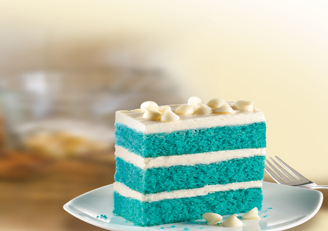

Water, vegetable oil and eggs called for on cake mix box
Red and green food color
1 container (12 oz) Betty Crocker™ Whipped fluffy white frosting
Betty Crocker™ Decorating Decors® red, green and white candy sprinkles
Directions
Heat oven to 325°F. Generously grease 12-cup fluted tube cake pan with shortening or cooking spray. Make cake mix as directed on box, using water, oil and eggs. Pour half of the batter into medium bowl; set aside. Divide the other half of batter equally between 2 small bowls. (You will be left with 3 bowls of batter.) Add red food color to 1 of the small bowls and mix well. Add green food color to the second small bowl and mix well.
Pour half of the white batter from medium bowl into cake pan. Carefully pour red batter over white batter in pan. Carefully pour green batter over red batter. Then pour remaining white batter from medium bowl over the top. Do not mix the colors.
Bake as directed on box until toothpick inserted near center comes out clean. Cool 10 minutes. Turn pan upside down onto cooling rack placed over a cookie sheet; remove pan. Cool completely, about 30 minutes. Place cake on serving plate.
Divide frosting between 2 small microwavable bowls. Microwave 1 bowl on High about 5 to 10 seconds; mix well with spoon until smooth enough to drizzle. With the spoon, drizzle white frosting back and forth around the whole cake in a striping pattern until you use all of the frosting (allow some frosting to drip down onto plate in middle of cake, if desired).
Microwave second bowl of frosting; stir in a few drops of green food color. Drizzle over cake, scattering back and forth in the same type of striping pattern. Decorate with sprinkles. Let stand until frosting is set before serving.
Make the currant gelatin: Put currants and sugar in a large saucepan. Bring to a boil. Reduce to a simmer, and cook, stirring occasionally, until currants are very soft, about 10 minutes.
Put 1/3 cup cold water into a small bowl; sprinkle with gelatin. Let soften 5 minutes. Add to currant mixture; stir until gelatin has dissolved, about 5 minutes.
Pour through a fine sieve into a bowl set in an ice-water bath, gently pressing out liquid with a spoon; discard solids. Remove from water bath, and let stand, stirring occasionally, until cool but not set. Pour 3 to 4 tablespoons currant gelatin into each of twelve 8- to 10-ounce glasses; set remaining currant gelatin aside. Refrigerate glasses until gelatin is completely set, about 1 hour.
Meanwhile, make the panna cotta: Put 1/3 cup cold water into a small bowl; sprinkle with gelatin. Let soften 5 minutes.
Put milk, cream, and sugar into a medium saucepan; bring almost to a boil. Reduce to a simmer. Add gelatin mixture, and stir until gelatin has dissolved, about 5 minutes. Pour through a fine sieve into a bowl set in an ice-water bath. Remove from water bath; let stand, stirring occasionally, until cool but not set.
Spoon 3 to 4 tablespoons panna cotta over currant gelatin in each glass; set remaining panna cotta aside. Refrigerate glasses until panna cotta is set, about 1 hour. Repeat with another layer of currant gelatin and panna cotta. If either mixture becomes too firm, set over a pot of simmering water until softened.
To serve, top each parfait with blueberries and currants, dividing evenly.

Blue Velvet Napoleon
Per Serving
Amount
Daily Value
Calories
370
Total Fat
18g
23%
Cholesterol
15mg
5.2%
Sodium
390mg
10.8%
Sugars
37g
212%
Protein
4g
3.33%
Ingredients
1 box Duncan Hines® Signature Blue Velvet Cake Mix
Combine cake mix, eggs, water, brown sugar and butter in large bowl. Stir until thoroughly blended (mixture will be thick). Spread into greased pan.
Bake 24 to 27 minutes or until toothpick inserted in center comes out free of crumbs. Cool completely in pan.
Cut into 3 rectangular strips lengthwise.
Spread frosting evenly onto the three pieces and then sprinkle with white chocolate chips. Stack the pieces together three layers high and chill 1 hour.
 Home
Home